Air and Gas Compression
7
Learning Outcome
When you complete this learning material, you will be able to:
Explain the design and operation of gas compressors and compressed air systems.
Learning Objectives
You will specifically be able to complete the following tasks:
- 1. Describe the design and application of compressors including a selection of prime movers.
- 2. Describe the design of reciprocating compressors.
- 3. Describe the design of rotary compressors.
- 4. Describe the design of centrifugal and axial compressors.
- 5. Describe the types and operation of coolers and air driers including types of desiccants.
- 6. Describe the installation of a compressed air system showing all ancillary equipment including typical instrumentation.
- 7. Describe the regulation and control of compressors.
- 8. Describe the monitoring and protection devices for a compressed air system.
- 9. Explain the effects of altitude, air temperature, and humidity on air compressor performance.
- 10. Describe the monitoring, troubleshooting, and typical preventive maintenance for a compressed air system.
Objective 1
Describe the design and application of compressors including a selection of prime movers.
APPLICATIONS OF COMPRESSORS
Compressors are similar to pumps except that they increase the pressure of a compressible fluid (gas). Pumps apply to incompressible fluids. Compressors are used in many different applications. Plants have compressed air systems to supply compressed air to instruments and for power tools. Compressors are an integral component of air conditioning and refrigeration systems, and are used to compress air and other gases and in engine starters, turbochargers and superchargers. They are also used in medical systems, industrial systems and chemical processes.
The construction industry uses air compressors to provide power for tools such as drills, riveters, jack hammers, impact wrenches and grinders. Air compressors provide air for painting applications, food processing, pharmaceuticals and manufacturing. The largest compressors are used in the transportation of natural gas and in chemical processing plants.
TYPES OF COMPRESSORS
There are two general classes of compressors, positive displacement and dynamic. Positive displacement compressors include reciprocating, diaphragm, sliding vane, rotary screw and lobe compressors. Dynamic compressors include centrifugal and axial flow compressors.
Positive Displacement Compressors
Positive displacement compressors draw the fluid into an enclosed space which decreases the volume. In general, positive displacement compressors are best able to provide high compression ratios for small to medium flow applications. Reciprocating compressors are the oldest and most common type of compressor and are used in many applications.
Other positive displacement compressors are rotary compressors which include rotary screw, sliding vane, lobe, and liquid-sealed compressors. Screw compressors have experienced recent advances and are becoming more prevalent in process applications and air compression.
Dynamic Compressors
Dynamic compressors use blading to increase gas velocity. It is then converted into pressure by diffusion (that is, a reduction in area). Dynamic compressors are composed of two major types: centrifugal and axial.
Dynamic compressors are most efficient at lower compression ratios but can accommodate much higher flows. Centrifugal compressors have the largest flow range of any compression device. Axial compressors can be stacked into multiple stages with a resultant high compression ratio and high flow capacity as is done in gas turbines.
COMPRESSOR DRIVERS
Compressor drivers are prime movers capable of developing the required power at a constant speed or range of speeds. The drivers energy source may be either electrical or mechanical. Electrical energy is used for electric motors that are either induction or synchronous types. Mechanical drivers are powered by steam turbines or gas or diesel engines. Most types of drivers have been used to drive compressors. Some common combinations are:
- • A reciprocating engine driving a reciprocating compressor
- • An electric motor driving a reciprocation compressor
- • An electric motor driving a screw compressor
- • A gas turbine driving a centrifugal compressor
- • A steam turbine driving a centrifugal compressor
- • An electric motor driving a centrifugal compressor
- • A steam turbine driving an axial compressor
The combination chosen is dependent on the type of power available and the amount of power required. Gas turbines and steam turbines are used for the largest power requirements because their power to weight ratio is the highest. Electric motors and reciprocating engines are best for low to medium power requirements. Steam turbines are best where steam is readily available and gas turbines are used where a hydrocarbon fuel is accessible.
Electric Motors
Synchronous or induction AC motors are common drivers of compressors. They are available in the smallest sizes and can be built large enough even for chemical plant process compressors. Selection of the motor is based on attaining the least expensive and most efficient size that will meet the requirements of driving the compressor. Oversized motors may be purchased because the actual load conditions are not fully known or because of anticipated load increases. API generally recommends the motor be sized at 110% of the greatest power required by the compressor. This allows some extra power as the compressor ages and loses some of its efficiency.
The compressor must be able to be started rapidly when driven by an electric motor as the motor comes up to speed rapidly. If the compressor cannot be brought up to speed quickly, a variable speed (variable frequency) electric drive may be used. The variable frequency control unit changes the frequency of the electric power to the motor. This allows the speed of the motor to be varied. The speed of the compressor is controlled to meet the demands of the process.
Steam Turbines
Steam turbines are often used to power centrifugal compressors in processing plants. The steam used in the process is available to operate the steam turbine. Turbines may be condensing, backpressure, or re-injection configurations. Steam turbines allow the compressor to be started up slowly and to operate at different speeds. The steam turbine and compressor often come as a package with a common lubricating oil system.
Gas Turbines
When low-cost fuel is available, gas turbines and gas engines (reciprocating) may be a viable option for compressor drivers. They are a viable option when no electricity or steam is available, such as on gas pipeline compressor stations. Engine driven drivers are usually used with reciprocating types of compressors. Gas turbines are more often used to drive centrifugal compressors. They are also used to drive axial compressors and sometimes large screw compressors.
Objective 2
Describe the design of reciprocating air compressors.
INTRODUCTION
A reciprocating compressor consists of a piston that moves back and forth or reciprocates inside a cylinder and physically reduces the volume to compress the gas. Openings or valves that are opened and closed allow gas to be introduced into the cylinder at the beginning of the stroke and discharged further along the stroke when the pressure is high enough to open the discharge valve.
Reciprocating compressors may be single-stage or multi-stage, depending upon the number of successive stages through which the air is compressed before reaching discharge pressure.
Reciprocating compressors may be either single- or double-acting. In single-acting reciprocating compressors, there is only one compression stroke per stage for each crankshaft revolution. In double-acting reciprocating compressors, air is compressed on each side of the piston alternatively, so there are two compression strokes for each crankshaft revolution.
Multi-stage compressor cylinders may be arranged in a number of different ways.
- • Side by side horizontally or vertically with a common crankshaft
- • In line with the pistons actuated by a common crankshaft
- • Radially arranged with the connecting rods coupled to a common crankshaft
Reciprocating compressors operate over a very wide range of speeds up to about 1000 r/min and are designed to deliver air at pressures up to about 1000 kPa in single-stage, and up to about 7000 kPa in two-stage. Special requirements require special machines such as the three-, four-, five-, or six-stage type capable of delivering pressures up to about 50 000 kPa.
SMALL RECIPROCATING COMPRESSORS
The most common type of air compressor is the small reciprocating compressor that is used in many small commercial and industrial applications.
The smallest compressors are either vertical or “V” single-acting air cooled. Small electric motors usually drive them, and they are placed together with the motor as a combined unit on top of the air reservoir. They are used in garages and small plants where the demand for compressed air is limited and the required pressure comparatively low. A single cylinder compressor mounted on top of the air receiver is shown in Fig. 1.
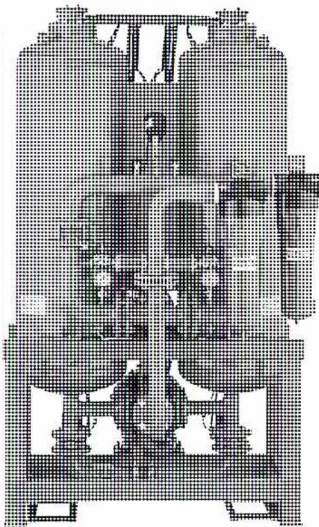
Figure 1
Small Reciprocating Air Compressor
For higher pressures, a dual cylinder compressor such as the one illustrated in Fig. 2 is required. There are two stages of compression in series with a finned tubing intercooler. Smaller portable compressors are often splash lubricated but larger ones normally have a lubricating oil pump. Small compressors can be tank-mounted and larger ones are placed on a separate skid or are permanently placed on cement pads.
![Figure 2: Dual Cylinder Reciprocating Air Compressor. A detailed cutaway diagram of a dual-cylinder reciprocating air compressor. The diagram shows the internal mechanical components, including the crankshaft, connecting rods, and cylinders. Labels with leader lines point to various parts: 'OIL PRESSURE GAUGE', 'TAPERED ROLLER BEARING', 'POSITIVE DISPLACEMENT OIL PUMP' (with a sub-note 'Provides lubricant to all areas of the compressor'), 'PRESSURE LUBRICATION' (with a sub-note 'Crankshaft and connecting rod bearings are pressure lubricated'), and 'INTERNAL FILTRATION' (with a sub-note 'An oil inlet screen').](efca2dce0095c9dc2a68e9af6b2bfd40_img.jpg)
Figure 2
Dual Cylinder Reciprocating Air Compressor
(Courtesy of Gardner Denver)
LARGE RECIPROCATING COMPRESSORS
The largest compressors are often double acting and water cooled. Between these extremes in size (very large to very small) are a wide variety of designs.
Horizontal compressors may have a single cylinder, two cylinders in tandem, two opposed cylinders, two cylinders in duplex or four cylinders in duplex opposed. A representative example is shown in Fig. 3.
![A detailed technical cross-section diagram of the right-hand portion of a balanced-opposed reciprocating compressor. The diagram shows the internal mechanical structure including the crankshaft, connecting rods, pistons, and cylinder heads. Numbered callouts from 1 to 10 point to specific components: 1 (Cylinder Support), 2 (Connecting Rod), 3 (Distance Piece), 4 (Pulsation Vessel), 5 (Frame), 6 (Crosshead), 7 (Piston Rod), 8 (Packing), 9 (Valves), and 10 (Water Jackets). The diagram is a black and white line drawing with some shaded areas to indicate depth and different materials.](c37fe03d7cad74ad675a0eb16aa43821_img.jpg)
| 1 = Cylinder Support | 5 = Frame | 9 = Valves |
| 2 = Connecting Rod | 6 = Crosshead | 10 = Water Jackets |
| 3 = Distance Piece | 7 = Piston Rod | |
| 4 = Pulsation Vessel | 8 = Packing |
Figure 3
Right Hand Portion of Balanced-Opposed Reciprocating Compressor
Courtesy of Dresser Rand Company
This horizontal, double-opposed water-cooled compressor is designed for heavy duty applications. The left hand side is a mirror image of the right hand view in Fig. 3. By having both pistons connected to the same crankshaft, unbalanced forces from each side cancel each other out. This creates fewer unbalanced forces and vibrations in the machine casing and foundations. It is also a double acting compressor. Cylinders and heads are cooled with water jackets. Shaft packing and tight casing covers on crankcase openings protect against leakage of oil and the entrance of dust and contaminants. An oil pump as well as splash lubrication is used to lubricate the operating parts. The regulation of compressor output is done by unloading the compressor, by stopping and starting or even by varying the speed of the driver and compressor. This compressor has pulsation dampeners on the discharge piping that reduce the pulsations in the output air flow.
The pulsation dampeners resemble small pressure vessels.
Vertical compressors may have a single cylinder or two or more cylinders in line.
The two-stage compressor shown in Fig. 4 has three cylinders arranged at \( 60^\circ \) . This is a V-type of arrangement. After initial compression in two identical low-pressure cylinders, the air passes through independent intercoolers where the air temperature is reduced. The air outlets from the intercoolers form a single flow to the high-pressure cylinder for the final compression stage.
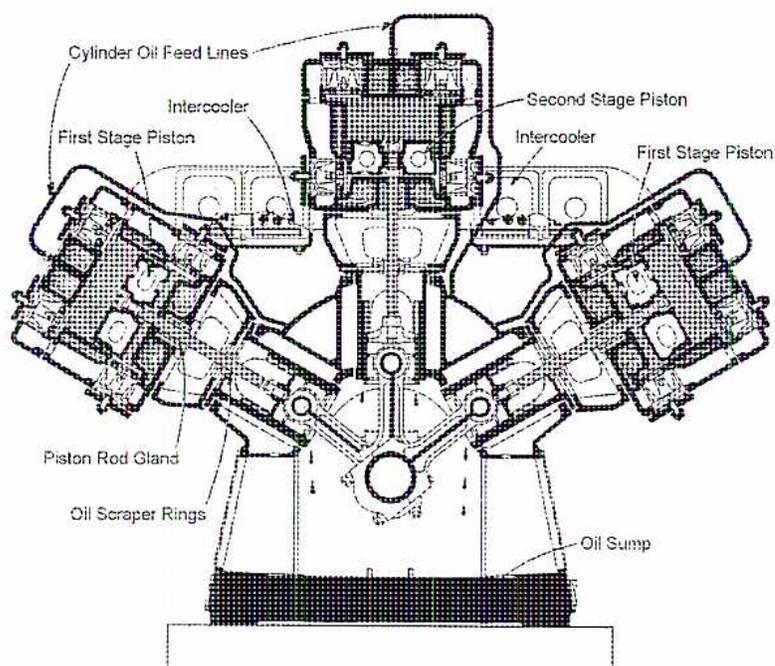
A detailed cross-sectional diagram of a V-type two-stage air compressor. The diagram shows three cylinders: two low-pressure cylinders on the sides and one high-pressure cylinder in the center. The side cylinders are labeled 'First Stage Piston'. The central cylinder is labeled 'Second Stage Piston'. Above each side cylinder is an 'Intercooler'. 'Cylinder Oil Feed Lines' are shown at the top. The central crankshaft is connected to all three pistons. Labels include 'Piston Rod Gland', 'Oil Scraper Rings', and 'Oil Sump' at the bottom.
Figure 4
Bellis & Morcom Type WH, Water-Cooled, Double-Acting, Two-Stage Compressor
AIR COMPRESSOR VALVES
Plate type inlet and discharge valves, as shown in Fig. 5, are commonly used. The shape of the plate varies according to the design of the compressor, but in most cases the principle of operation is similar. These valves act automatically. They operate on the pressure difference which exists between the internal and external surface of the valve produced by the movement of the piston in the cylinder.
![Figure 5: Compressor Plate Valves. The figure is divided into two main sections: 'Strip Type' and 'Ring Type'. The 'Strip Type' section shows a cross-sectional view of a valve assembly with a 'Stop Plate', 'Valve Channel', 'Valve Spring', and 'Cusion Pocket'. A smaller diagram shows the 'Valve Closed' and 'Valve Open' states. The 'Ring Type' section shows a cross-sectional view of a valve assembly with 'Valve Plates', 'Valve Spring', 'Reaction Plate', 'Valve Guard', and 'Cusion Pocket'. A smaller diagram shows the 'Valve Closed' and 'Valve Open' states, with a note 'Shift of Support Point Increases Spring Stiffness'. Labels include: 'Valve Strips Flex to Fit Curve of Valve Guard When Open', 'Valve Guard', 'Flexible Valve Strips In Closed Position', 'Strip Type', 'Valve Plates', 'Valve Spring', 'Reaction Plate', 'Valve Guard', 'Valve Closed', 'Shift of Support Point Increases Spring Stiffness', 'Valve Open', 'Ring Type', 'Cusion Pocket', 'Retainer Ring'.](967c30813761a8952ecc5e16bf42ea45_img.jpg)
Figure 5
Compressor Plate Valves
Although designs differ, the valve element usually consists of one or more ring-shaped flat plates or rectangular strips which connect to the edges of the ports having a similar shape. These plates open against light spring pressure and, to secure rapid action, they are normally made light weight and are designed for a low lift. As the valves open, the increasing spring pressure minimizes shock and noise. In some designs, cushion pockets which form as the valves approach the open position act to cushion the shock.
The valves must operate very quickly. A compressor operating at 300 r/min makes 10 strokes every second or one stroke in 0.1 seconds. Assuming that the valve must operate within a small portion of the stroke, the period of operation of the valve is much less than 0.1 seconds.
An important feature in valve design is the resistance to air flow. If this resistance or friction is too high, the compression efficiency is seriously impaired. To enable air to flow through a pipe or restricted passage, there must be a pressure difference between the inlet and outlet.
The magnitude of this difference depends upon the amount of air passed through the restriction and also upon the area of the restriction. When air flows through a compressor valve, some frictional loss is incurred. Even if the valve area is large, there is some restriction to the flow. There must also be some pressure difference or the valve does not open. The energy required to force air through the valve and subsequent passages is expended to no useful purpose and so lowers the compression efficiency.
Objective 3
Describe the design of rotary air compressors.
ROTARY AIR COMPRESSORS
Rotary air compressors comprise a small group of designs in which one or more parts rotate in a closely fitting circular or part-circular casing. They operate at various speeds from medium to high and are capable of providing delivery pressures up to about 1500 kPa. The free-air capacities of this type of compressor can reach 1500 m 3 per minute. Rotary air compressors can be divided into four types:
- 1. Sliding vane, in which longitudinal vanes slide radially in a rotor mounted eccentrically in a casing
- 2. Roots or lobe, in which two or more lobed impellers revolve within a casing
- 3. Screw type, in which two intermeshing screws rotate in a casing
- 4. Liquid-sealed, in which a liquid displaces air within a rotating element
Sliding Vane Compressors
Sliding vane compressors are available for discharge air pressures up to about 400 kPa for single-stage machines, and up to about 1000 kPa for two-stage units. The capacities go as high as 170 m 3 per min and the driving motor sizes range from 100 W to 375 kW.
Sliding vane compressors operate at speeds from 250 r/min to 3000 r/min, depending upon the prime movers and the free-air capacity of the units. In some designs, internal water or oil cooling is incorporated to carry away the heat of compression, while in others air cooling is sufficient to maintain temperatures. The internal parts of a vane type rotary compressor are shown in Fig. 6. The unit is comprised of a rotor that revolves within a casing. The rotor is eccentric in relation to the bore of the casing and forms a crescent-shaped space between them. The rotor fits between closely fitting end plates.
The vanes follow the casing contour as the rotor revolves, in this case by centrifugal force, but in others due to the action of light springs. Rotation of the rotor causes the vanes to reciprocate in their slots. The volume of the pockets formed between the casing and adjoining vanes varies from small to large, then back to small.
The ports are located so that air is drawn into pockets of increasing volume and discharged from pockets of decreasing volume. When a vane passes the inlet port, air is trapped between the inlet port and the preceding vane and is simultaneously compressed and carried round to the discharge port.
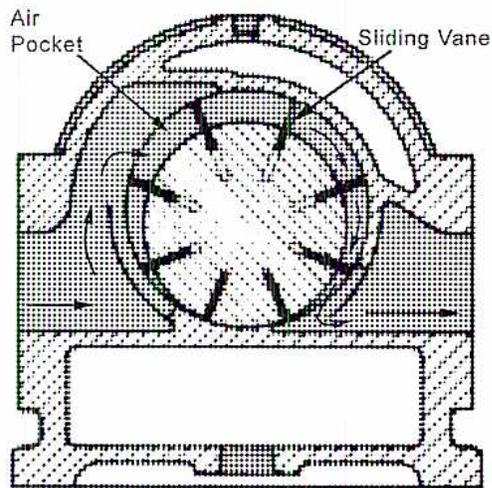
Figure 6
Sliding Vane Schematic
Fig. 7 shows a cutaway view of a sliding vane compressor. The intake air, after passing through the inlet filter, enters the suction port. As the rotor rotates, the intake air flows into the spaces formed between adjacent vanes as the spaces pass the inlet area. Owing to the eccentricity of the rotor within the casing, the volume of air trapped between the vanes, and the rotor and the casing is decreased as the rotor revolves and the vanes approach the outlet port. The air is compressed and is discharged as each volume passes by the delivery port.
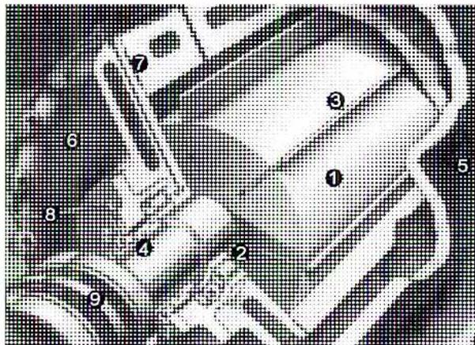
-
1. bearings 5. casing 2. blades 6. end cover 3. mechanical seals 7. oil supply slot 4. cylinder and housing 8. coupling
Figure 7
Sliding Vane Compressor
Courtesy of AC Compressor Corp.
In some sliding vane models, the vanes do not touch the casing bore but contact two rings or liners that are concentric with the casing and free to rotate within it. These rings are perforated to allow the air to enter and leave spaces between the vanes. With the employment of these rings (wear rings) the wear on the outer edges of the blades is considerably reduced. The power required to drive the compressor is also reduced, due to a decrease in frictional losses. This power reduction permits higher operating speeds and consequently a greater output of compressed air for a given power input.
LOBE-TYPE COMPRESSORS
Lobe-type compressors are built for capacities up to \( 1500 \text{ m}^3/\text{min} \) and for discharge pressures in one stage up to \( 100 \text{ kPa} \) . Discharge pressures up to about \( 200 \text{ kPa} \) can be reached in two stages. Speeds of operation vary with the size of the machine up to about \( 1750 \text{ r/min} \) .
Lobe-type compressors are air cooled and are positive displacement compressors. They incorporate a relief valve in the delivery line upstream of the block valve. Fig. 8 shows the working parts of a Lobe-type compressor. The position of the lobes is maintained by the gears at the end of the lobe shafts. The clearance between the lobes is exact and is maintained by the gearing.
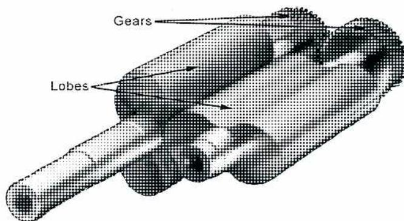
Figure 8
Lobes and Timing Gear for Compressor or Blower
The operation of a lobe-type compressor is shown in Fig. 9. Two parallel cylindrical bores partially intersecting form the chamber inside the casing. Revolving in each of these bores is a rotor or impeller, and its length is the same as that of the casing. The rounded heads of the other rotor sweep the hollows in the sides of each rotor. The two rotors turn simultaneously using two gear wheels outside the casing which are intermeshed so that when one rotor is vertical the other is horizontal. These rotors, in every position, close all communication between suction and discharge. First the suction inlet is uncovered and then it is closed. The discharge outlet ports are then opened and closed in succession.
Figure 9
Lobe-type Compressor Schematic
Because the rotors or impellers revolve without touching each other and without friction on the casing, no wear occurs and there is no need for internal lubrication. The air or gas passing through the machine consequently remains dry and free of oil. The rotor bearings and the gear wheels are mounted in the end covers. The complete separation of the bearings and the machine assures long life for all the internal working parts. The bearings are also protected from harmful effects of impurities which may be in the air. The driving gears that maintain the impellers in proper position are of a precision design so that three or four teeth are always in contact. In this way, bearing loads are kept at a minimum, tooth wear is reduced and a uniform and oil film is maintained.
In Fig. 10 each impeller has two lobes. There are designs in which each impeller has three lobes. The principle of operation is similar.
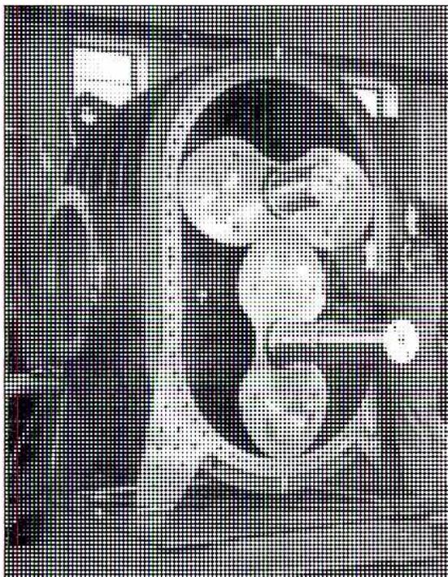
Figure 10
Internal View of Lobe-Type Compressor
SCREW COMPRESSORS
Like the Roots type machine, the screw compressor has two intermeshing rotors enclosed in a close-fitting casing. The rotors are machined in the form of an axial screw and, as they rotate together, air is trapped and compressed.
Fig. 11 illustrates the principle of operation. The male rotor has fewer lobes than the female has flutes. This is due to mechanical design considerations. The two rotors trap and compress the air until it passes the discharge outlet. Having another lobe-flute space reach the outlet before the previous space has completely emptied assures continuous compression and pulse-free air delivery. The male rotor, being smaller, turns faster than the female rotor. Power is usually applied to the male rotor. The female rotor serves primarily as a rotary sealing medium.
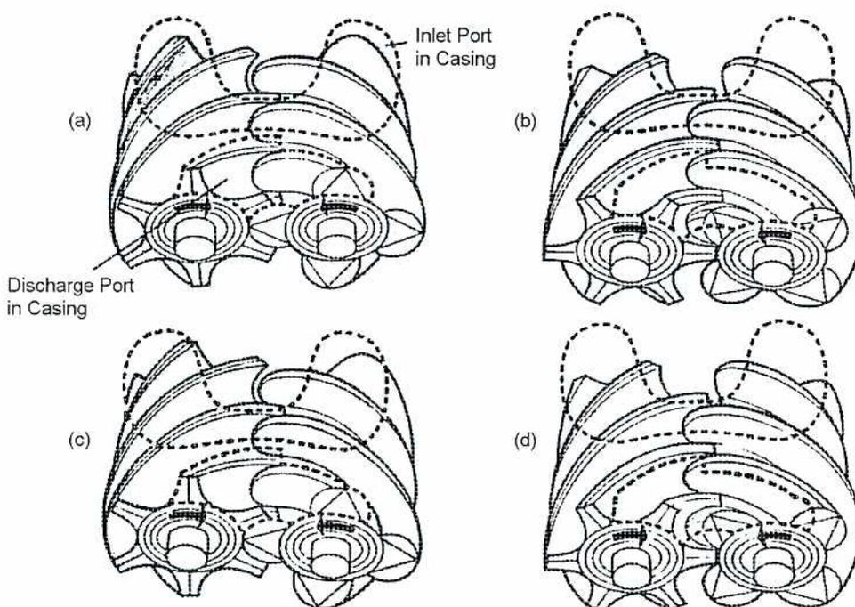
Figure 11
Principle of Operation of Rotary Screw Compressor
The air flows through a screw compressor as shown in the four stages in Fig. 11. It is drawn in through the compressor inlet into the interlobe space as shown in (a). Further rotation seals the space off from the inlet (b). As rotation proceeds, the male lobe occupies more space in the female flute and compresses the air (c). Continued rotation brings the compressed air to the outlet port (d) shown by the dotted lines.
Rotary screw compressors are available for discharge pressures up to about 700 kPa for single-stage machines. Multi-stage machines give higher discharge pressures. Capacities of screw compressors can reach 700 m 3 /min. Operating speeds vary from 1500 to 12 000 r/min. A water jacket surrounding the rotors with either oil or water circulating through the centre of the shaft is the standard method of cooling.
In some small portable machines, oil is injected into the intake air to act as a coolant and internal seal. In these units, oil separators are necessary to extract the oil from the delivered air for reuse in the compressor. The cooling effect of the oil in this type of unit is sometimes sufficient to make intercoolers and aftercoolers unnecessary.
Tandem screw compressor designs have a power advantage over equivalent single-stage compressors. Fig.12 shows a single stage (bottom) and a two stage compressor that deliver the same amount of air for the same operating pressures and temperatures. Dividing the compression over two stages reduces the compression for each stage. This reduces internal leakage losses and can reduce required power by 11-13%. The two stage compressor is larger and more expensive to purchase, however.
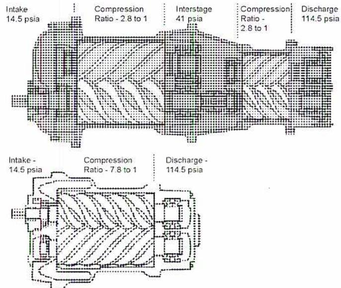
The diagram illustrates two screw compressor configurations. The top configuration is a two-stage tandem screw compressor. It shows air entering at 14.5 psia, being compressed in the first stage with a ratio of 2.8 to 1, resulting in an interstage pressure of 41 psia. This air is then compressed in a second stage with another ratio of 2.8 to 1, resulting in a final discharge pressure of 114.5 psia. The bottom configuration is a single-stage screw compressor. It shows air entering at 14.5 psia and being compressed directly to a discharge pressure of 114.5 psia, resulting in a total compression ratio of 7.8 to 1. Both diagrams show the internal screw elements and the housing.
| Compressor Type | Intake (psia) | Compression Ratio | Interstage (psia) | Discharge (psia) |
|---|---|---|---|---|
| Two-Stage | 14.5 | 2.8 to 1 (Stage 1) | 41 | 114.5 |
| Two-Stage | 2.8 to 1 (Stage 2) | |||
| Single-Stage | 14.5 | 7.8 to 1 | 114.5 |
Figure 12
Two-Stage Tandem Screw Compressor
(Courtesy of Sullair)
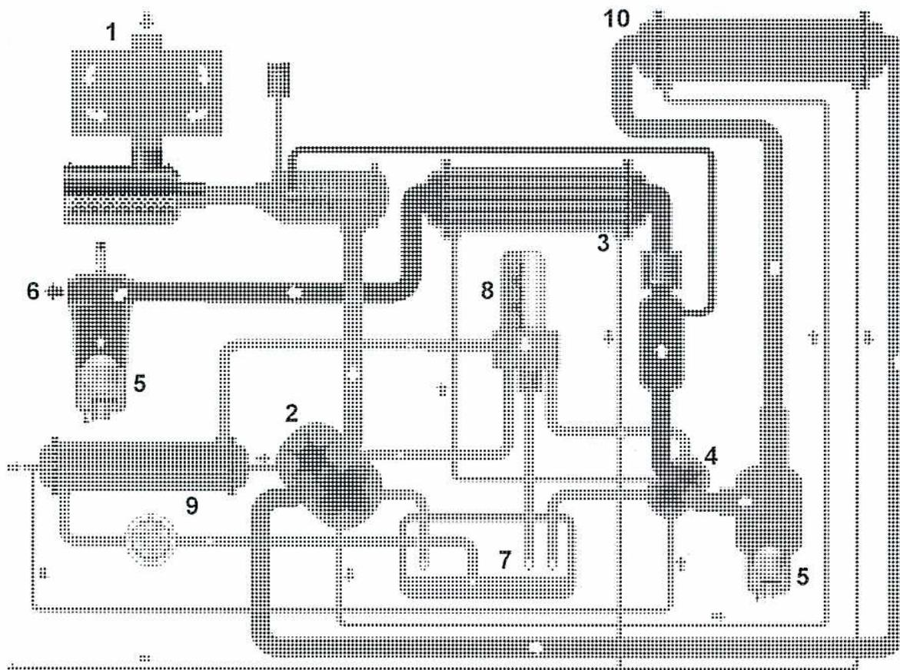
-
1 - Air in 6 - Air out 2 - Low Pressure stage 7 - Oil sump 3 - After cooler 8 - Oil filter 4 - High Pressure stage 9 - Oil cooler 5 - Water separator and drain 10 - Inter cooler
Figure 13
Flows of an Atlas Copco Compressor Package
(Courtesy of Atlas Copco)
The air compressor in Fig. 13 is a packaged two-stage Rotary Screw oil-free air compressor. The term “Packaged Air Compressor” means that the unit and its auxiliaries come in one unit. The package contains a two-stage compressor with an electric motor drive, lubricating oil system, coolers, and a control system. The intercooler, aftercooler and lube oil coolers are water-cooled. The control system for this compressor is microprocessor based. The compressor load is varied by means of a modulating inlet valve.
LIQUID-SEALED COMPRESSORS
The principle of operation and design of a rotary liquid-sealed compressor (also called a liquid ring) are illustrated in Fig. 14. In this liquid-sealed compressor a multi-bladed rotor revolves in an elliptical casing partly filled with a liquid. Liquids used include water, acid, alkali solvent, or refrigerant depending upon the gas being compressed. When air is compressed, water is normally used. The curved rotor blades project radially from the hub and form, with the side shrouds, a series of pockets or buckets around the periphery.
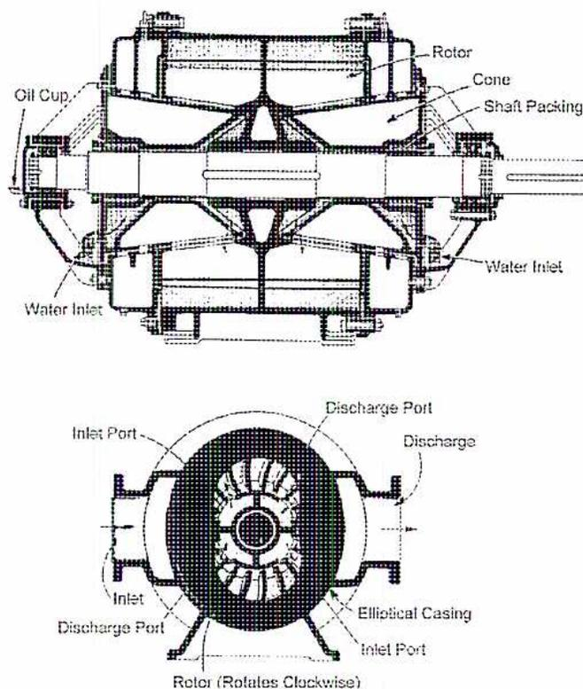
The image contains two diagrams of a rotary liquid-sealed compressor. The top diagram is a longitudinal cross-section showing the internal components: a central rotor with multiple curved blades, a conical housing (labeled 'Cone'), shaft packing, an oil cup, and two water inlets. The bottom diagram is a transverse cross-section showing the elliptical casing, the rotor with its blades, stationary inlet and discharge ports, and an arrow indicating clockwise rotation.
Figure 14
Rotary Liquid-Sealed Compressor
The rotor revolves at a speed high enough that centrifugal force throws the water out from the centre. This creates a solid ring of water revolving in the casing at the same speed as the rotor but following the elliptical shape of the casing. This alternately forces the water to enter and recede from the buckets in the rotor at high velocity. Air enters and leaves the buckets as their volumes increase and decrease with the rotation of the rotor. It enters through slots in the base of the rotor and is discharged through similar slots. The cycle takes place twice per revolution.
Stationary inlet and discharge ports are located in cones that extend inward from the heads. A small stream of water is continuously fed to the compressor for cooling purposes. Excess water is carried out with the compressed air to a separator where it is discharged through a float operated valve. All models of this compressor employ
antifriction bearings. These are located in external housings and are designed for oil lubrication. No internal lubrication is required.
The liquid-sealed type of compressor has some advantages. The most important is that clean air free from dust, heat or oil. It is delivered without the use of an intake air filter. The liquid seal removes all contaminants and, as there are no internal parts requiring lubrication, and oil is not entrained in the discharge. An aftercooler is not required.
Although larger sizes have been produced, the majority of liquid ring compressors fit into the size where 15 to 150 kW drivers are used to compress gases to about 1500 kPa.
Objective 4
Describe the design of centrifugal and axial compressors
DYNAMIC COMPRESSORS
Dynamic compressors use blading to increase gas velocity. It is then converted into pressure by diffusion (a reduction in area). Dynamic compressors are composed of two major types:
- • The centrifugal compressor, which uses one or more rotating impellers to produce a radial air flow.
- • The axial compressor, which uses a bladed rotor to produce an axial air flow.
Dynamic compressors are most efficient at lower compression ratios but can accommodate much higher flows. Centrifugal compressors have the largest flow range of any compression device. Axial compressors can be stacked into multiple stages with a resultant high compression ratio and high flow capacity as is done in gas turbines.
Centrifugal Compressors
The centrifugal compressor consists of an impeller rotating at a high speed in a volute shaped casing. Air enters at the center or eye of the impeller and is forced out at high speed and increased pressure at the impeller rim because of centrifugal force. After leaving the impeller, the air passes through the casing where further conversion of speed to pressure occurs. In some cases, a ring of diffuser vanes, located around the rim of the impeller, aid in converting the air speed to pressure.
The arrangement of a compressor rotor is shown in Fig. 15. The disc is connected to the shaft. Air enters at the eye of the impeller or blade, and is forced out at high speed by the blade.
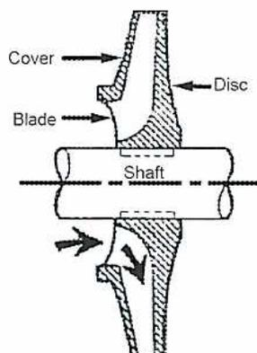
A cross-sectional diagram of a centrifugal compressor wheel. It features a central shaft, a disc, a blade, and a cover. The shaft is a horizontal dashed line. The disc is a solid circular component mounted on the shaft. The blade is a curved, airfoil-shaped component attached to the disc. The cover is a curved, shell-like component that partially encloses the blade. Arrows indicate the flow of air: one arrow points into the center (the 'eye') of the impeller, and another arrow points outwards from the tip of the blade, representing the high-speed exit flow.
Figure 15
Centrifugal Compressor Wheel
The centrifugal compressor in Fig. 16 is used to supply instrument air that is completely oil free. Number 4 on the diagram shows the location of the labyrinth style of air seals. Number 6 is the oil seal. There is a space between the oil and air seals, allowing for any oil to be drained away. Therefore, no oil can enter the air stream. A single-stage compressor like this one compresses air up to 400 kPa. To obtain higher pressures, a multistage compressor is used with two or more impellers. They can be on a common shaft, or on separate shafts.
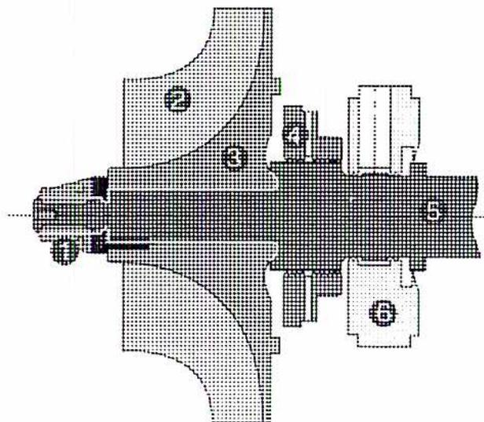
-
1. Lock Nut 4. Air Seal 2. Inlet 5. Pinion 3. Impeller 6. Oil Seal
Figure 16
Centrifugal Compressor Shaft and Rotor
Single stage centrifugal compressors are often driven through gear drives to increase the operating speed of the rotor. Fig. 17 shows the gears driving a compressor. It has inlet guide vanes to guide the air stream into the impeller. The diffuser vanes on the outlet of the impeller are used to convert velocity energy into pressure energy.
![A detailed cross-sectional diagram of a single-stage centrifugal compressor. The diagram shows the internal components: a central shaft driven by a gear (labeled 'Gears'), which in turn drives an impeller (labeled 'Impeller'). The impeller is housed within a casing (labeled 'Casing'). The casing features an inlet at the top with optional guide vanes (labeled 'Inlet Guide Vanes (optional)') and an outlet at the bottom with optional diffuser vanes (labeled 'Diffuser vanes (optional)'). The shaft is supported by bearings (labeled 'Bearings') and sealed with seals (labeled 'Seals').](ae02603e9e4b46477222bf72c1c7c7f6_img.jpg)
Figure 17
Single Stage Centrifugal Compressor
(Courtesy of Dresser Rand)
There are main types of casing types for multistage centrifugal compressors, the horizontally split type and the barrel type. In the split type the top half of the casing can be removed for maintenance.
When very high pressures are required, a barrel type casing is used. The barrel type casing is a one piece, cylindrical casting into which the compressor parts are placed. The casing is of thicker wall construction at the discharge end for added strength. A barrel type of centrifugal compressor is shown in Fig. 18. It has 4 wheels on the shaft. Notice the air flow through the 4 wheels. At b the air is being directed into the first wheel. At c the air is in the first impeller, and at d and e the air is flowing to the second wheel. F is the discharge from the last wheel and is also the discharge from the compressor.
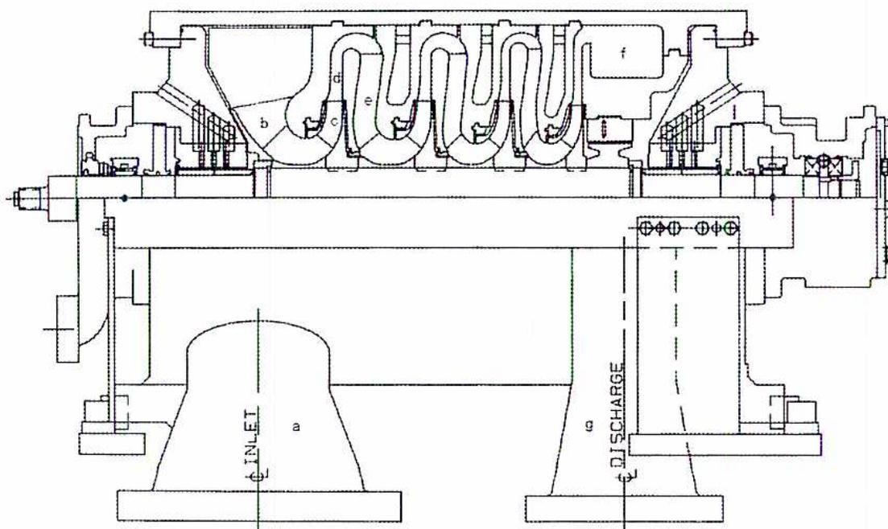
Figure 18
Centrifugal Compressor with Four Wheels
Advantages of the centrifugal compressor are a large volume and oil-free discharge of gas, as well as a simple, rugged construction with low maintenance. Disadvantages are a lower efficiency than positive displacement types, and their unsuitability for low capacity work.
Axial Flow Compressor
The axial flow compressor is similar to a reaction steam turbine. It has a shaft or rotor with moving blades alternating with fixed blades attached to the casing. Pressure is increased by forcing the air through the fixed blades converting the speed produced by the moving blades to pressure. The air flows along the axis of the rotor, hence the name axial flow compressor. Fig. 19 shows the rotor of an axial flow compressor. It has a horizontally split casing, that has been removed for inspection. Notice the large number of stages, with the longer blades on the suction end.
A stage is comprised of one pair of blades. A small pressure rise is produced in each stage, and therefore, axial flow compressors have a large number of stages. Axial flow compressors can handle large flow volumes in relatively small casings. They produce pressures up to 400 kPa. Flow volumes range from 40,000 and 1,000,000 m 3 /h.
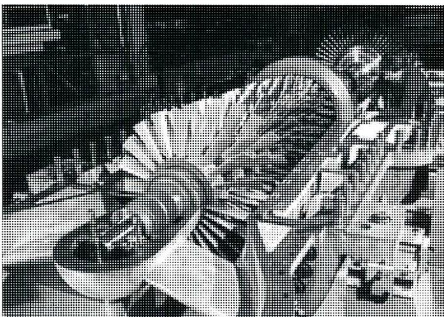
Figure 19
Axial Flow Compressor
Objective 5
Describe the types and operation of coolers and air driers including types of desiccants.
COOLING
Because the compression process causes an increase in the temperature of the compressed fluid, coolers are used in various configurations. Cooling during the compression process improves the efficiency of compression, and cooling after compression reduces the final discharge temperature.
Cooling During Compression
Air cooling is done most effectively during compression. The circulation of atmospheric air cools the cylinders of small and medium-size single-acting air compressors. To assist in this process, fins are cast on the exterior surfaces of the cylinder walls and cylinder heads to accelerate the rate of heat removal.
The cylinders of all large compressors, all double-acting compressors, practically all multi-stage compressors and many small and medium vertical single-acting compressors are water cooled. In most cases water jackets surround the cylinders and water passages run through the cylinder heads.
Only a small percentage of the total volume of air passing through a compressor can come into contact with the cooled surface of the cylinder during the short period of compression. This limitation does not permit removal of all the heat during the compression stroke. It does, however, limit the operating temperature of the cylinder walls and head.
Water is circulated around and through the cylinder jackets in exactly the same way as in an internal combustion engine. As it circulates, the water absorbs about 15 percent of the heat generated during compression. Rapid circulation of the water through the jacket is desirable in all closed systems. A circulating pump for the cooling circuit increases the circulation and makes it possible to reduce the total volume of water used.
Temperature of the water entering the cooling system is as low as possible to obtain efficient cooling. The recirculated water is thoroughly cooled, using a cooling tower or spray pond before it re-enters the circulating system.
Dirty or hard water cause scaling of the water jacket surfaces. This causes a reduction in heat transfer which is a common contributing factor to excessively high discharge
temperatures. Water jackets should, therefore, be cleaned and inspected regularly. The cooling water may be chemically treated to reduce corrosion and deposits.
Air Cooling After Compression
The cooling of the compressed air after it has left the compressing cylinder is divided into two distinct types of operation: intercooling and aftercooling. Intercooling is the cooling of the air back to its suction temperature, or as near to it as possible, between the stages of a multistage compressor. Aftercooling is the final cooling of the air before it is delivered to the receiver or discharged through distribution lines.
Intercoolers
Intercoolers provided between the stages of air-cooled compressors are usually air cooled. They have one or more straight, curved or coiled sections of finned tubing between headers. A current of air may be directed across the tubing with a fan which is driven either directly from the compressor crankshaft or from a driving pulley.
When the air compressor cylinders are water cooled, the usual arrangement is for the intercooler also to be water cooled. Except for the very small sizes, water-cooled intercoolers are often shell and tube exchangers with straight tubes in a cylindrical shell. The cooling water flows through the tubes and makes several passes. The air is on the shell side and flows around the tubes. Baffle plates direct the gas flow across the tubes.
Drains are provided on all intercoolers so that water that condenses out when the compressed air is cooled may be removed. Air entering the first-stage cylinder contains a certain amount of entrained moisture which is passed into the intercooler after compression. Usually the intercooler is not sized to cool the air enough for the moisture to condense. It may happen however in low ambient temperatures, or during startup and shutdown conditions.
The water is not deposited in the compression cylinder because the air is heated above its original temperature. This increases its water carrying capacity reducing its relative humidity.
Due to the decrease in temperature which takes place in the intercooler, the air loses its water retaining capacity and moisture condenses out on the cooling tubes. If the temperature drops below the dew point, the moisture ultimately finds its way to the bottom of the intercooler shell and to the drain.
A numerical example may stress the importance of this point. In a two-stage compressor taking in air at atmospheric pressure, 20°C and 75% relative humidity, and a delivery pressure of 800 kPa gage, about 1 litre of water condenses out per minute in the intercooler for each 100 m 3 of free air per minute compressor capacity.
Fig. 20 shows a semi-radial reciprocating two-stage compressor. Two low-pressure stages and two high-pressure stages operate in parallel. Each one has an intercooler (shown here in part section) between low pressure and high pressure.
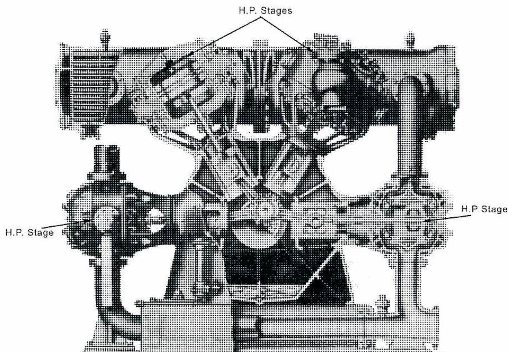
Figure 20
Semi-Radial, Reciprocating, Two-Stage Compressor
Aftercoolers
Water is nearly always used as the cooling medium in aftercoolers, which are used to cool the compressed air prior to its delivery either to the point of use or to the receiver. The temperature of the compressed air is reduced to the existing atmospheric temperature or below.
The construction of aftercoolers is often similar intercooler construction. Means for trapping, separating and draining water are also provided in the system.
The aftercooler shown in Figure 21 is the pipeline type. It has shell-and-tube construction and is arranged for air flow through the tubes. A water separator is located at the air outlet as shown in the illustration.
![A detailed cross-sectional diagram of a shell and tube aftercooler. On the left, air enters through an 'Air Inlet' and passes through a series of horizontal tubes. These tubes are surrounded by 'Brass Baffles' which direct the flow of 'Cooling Water' entering through a 'Cooling Water Inlet' at the bottom. The cooling water exits through a 'Cooling Water Outlet' at the top. A 'Safety Valve Connection' is shown at the top left. The tubes terminate in a 'Floating Head' on the right. The shell is connected to a large vertical tank. Inside the tank, the air is shown swirling, and a 'Drain' is located at the bottom. A pressure gauge is mounted on top of the tank.](5f18c728fc511750ffcaa626716b920e_img.jpg)
Figure 21
Shell and Tube Aftercooler
In those systems where an aftercooler is not employed, heat transfer to the surrounding atmosphere cools the air and moisture is precipitated both in the receiver and distribution lines. It is important that some means is provided whereby the water can be separated from the air and periodically drained, since it is generally desirable and sometimes essential that the air should be dry at the point of use. Compressed gas streams for process use may not require cooling.
The presence of water in air lines may be the cause of water hammer which can cause damage in distribution lines and equipment. Water in systems also presents dangers in cold weather, because there is always the possibility of ice forming which can be a contributory factor to air leakage and pipe fracture. The presence of water in air lines also introduces the problem of rust and corrosion, in the piping and the equipment using the air.
AIR DRIERS
For many compressed air system applications, such as instrument air, it is important that the delivery air be as dry as possible. The main three types of driers used to dry the air are:
- • Membrane
- • Desiccant
- • Refrigerated
Membrane Driers
These are best suited to small applications and allow drying to a dew point of between 4°C to -40°C. They consist of microscopic tubes bundled in a larger tube. The compressed air stays inside the small membrane tubes, while purge air is supplied to the larger tube. The water vapour passes through the membrane into the purge air. An example is shown in Fig. 22.
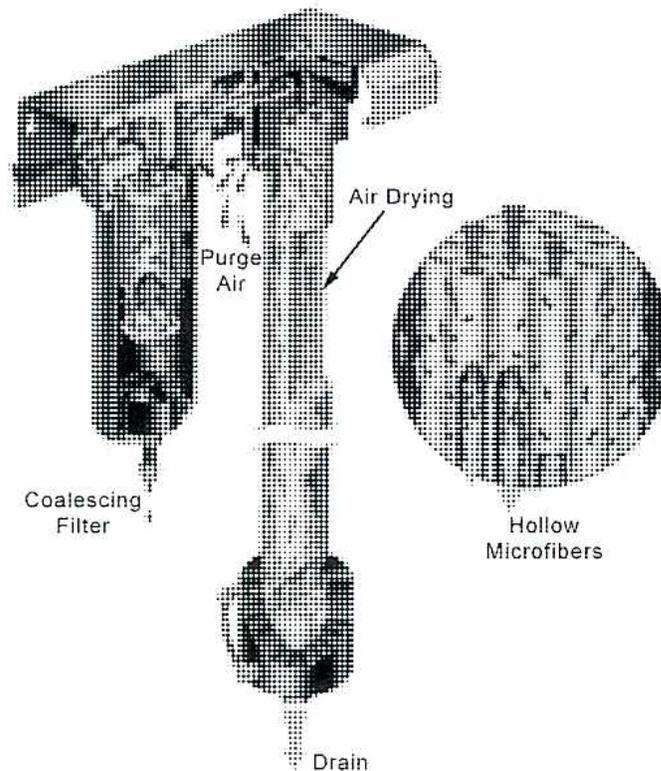
Figure 22
Membrane Drier
(Courtesy of Balston)
Prior to entering the membrane drying module, the compressed air passes through a high efficiency coalescing filter to remove oil and water droplets and particulate contamination. The liquids removed by the coalescing filter continuously drip from the filter into the bottom of the housing for draining.
The water vapor in the compressed air is removed by the principle of selective permeation through a membrane (drying phase of Fig. 22). The membrane module consists of bundles of hollow membrane fibers, each permeable only to water vapor. The compressed air passes through the center of these fibers. Water vapor permeates through the walls of the fiber, and dry air exits from the other end of the fiber. A small portion of the dry air (regeneration flow) is redirected along the length of the membrane fiber to carry away the moisture-laden air which surrounds the membrane fibers. The remainder of the dry air is piped to the application.
The membrane drier is very sensitive to contaminants and the air must be very clean or the entire membrane assembly will have to be replaced. It uses a large amount of purge air, typically 20-40% of the compressed air so it may be expensive to operate. Having a simple construction with no moving parts these dryers may operate trouble free for many years with minimal maintenance.
Desiccant Driers
The desiccant drier which can provide dew points of \( -20^{\circ}\text{C} \) to \( -100^{\circ}\text{C} \) . The desiccant drier works on the principle that certain materials, called desiccants, can adsorb large amounts of moisture in the air. A heatless or heat-activated process is used to regenerate or remove the moisture. The major desiccants used are:
- • Silica gel is the least expensive and retains large amounts of moisture. It has a pickup rate of about 35% but is not especially tolerant to liquid water. The pickup rate means that the desiccant will absorb 35% of its own weight in moisture. Either a heatless or heat-activated process can be used with a reactivation temperature of \( 150^{\circ}\text{C} \) .
- • Alumino-silicate gel is a more expensive desiccant but it is tolerant to liquid water. For this reason, some manufacturers use alumino-silicate gel as the first 1/3 of the desiccant and less expensive silica gel for the remainder.
- • Activated alumina is a good all around desiccant which is quite tolerant of liquids. It is more expensive than alumino-silicate and silica gel but it allows the use of only one desiccant which simplifies servicing of the tower. It has a pickup rate of 16% which is lower than silica gel, but it is more stable. Either a heatless or heat-activated process can be used with a reactivation temperature of \( 200^{\circ}\text{C} \) .
- • Molecular sieve provides the lowest dew points but is the most expensive. The pickup rate is about 18% and it is tolerant of liquids. Either a heatless or heat-activated process can be used with a reactivation temperature of \( 235^{\circ}\text{C} \) .
Either a heatless process or the application of heat can reactivate the desiccant, that is, remove the moisture. Two towers are used with one tower used to dry the compressed air, while the other one is regenerating. When the drying tower becomes saturated, the compressed air is switched to the second tower while the first one is regenerated.
A heatless drier uses some of the compressed air, known as purge air, to dry out or regenerate the saturated drier. As the compressed air expands, its relative humidity is lowered and it reabsorbs moisture from the desiccant. The disadvantage of this method is that usually about 15-18% of the compressed air is required for purge air. This reduces the capacity by 15 -18% increasing the cost. One advantage is that heatless driers can be pneumatically controlled making them suitable for hazardous areas where electrical controls are not acceptable.
Heat reactivated driers operate by heating the saturated desiccant and then passing a small amount of compressed or purge air over the desiccant bed to carry the moisture away. The heat can either be applied internally through a heater installed in the desiccant bed (where it is well protected in case it shorts out) or externally with a heated jacket around the tower and heat supplied electrically or with steam. The reactivation temperature depends on the type of desiccant.
The amount of purge air required is about 3-8%. It can be obtained from the compressed air or from a separate blower close to the desiccant tower that blows atmospheric air over the desiccant bed when reactivation is required.
Fig. 23 and Fig. 24 illustrate a typical desiccant drier with two towers containing activated alumina. A blower is mounted in the centre to reactivate the beds. A control and monitoring system controls switching between the towers and the reactivation process. A timer or a relative humidity sensor activates the switching. It indicates the depletion of the desiccant as the air's moisture content rises. Additional capacity of 30% is provided to allow for aging of the beds with an expected life of 3-5 years.
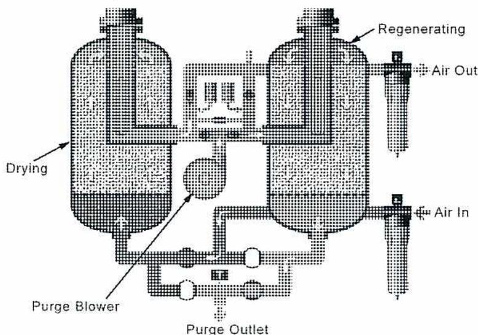
The diagram illustrates a dual-tower desiccant drier system. Two vertical cylindrical towers are positioned side-by-side. The left tower is labeled 'Drying' and has an 'Air In' port at its base. The right tower is labeled 'Regenerating' and has an 'Air Out' port at its top. A central 'Purge Blower' is connected to the base of the right tower. A 'Purge Outlet' is located at the bottom center of the system. Various pipes and valves connect the towers to the blower and the inlet/outlet ports.
Figure 23
Desiccant Drier
One problem with desiccants is the potential for fire. This applies mostly to designs that use a lubricated compressor. Oil is carried over into the desiccant and collects over time. As the desiccant becomes coated with oil it loses its ability to adsorb water. If the heater thermostat fails and the temperature increases to 200-250°C, the oil may ignite resulting in a fire.
Figure 24
Desiccant Drier
Refrigerated Driers
Refrigerated driers are quite common and produce a dew point of about 2°C. They cool the compressed air through the use of heat exchangers that operate on a refrigeration cycle. This type of drier is suitable for large volume applications.
Fig. 25 shows the cooling cycle. Cold outgoing air precools the wet compressed air in an air-to-air heat exchanger. The refrigerant further cools the air which condenses the moisture in the air. The condensate is removed through condensate drains as it collects. The refrigerant is supplied using a standard refrigeration cycle.
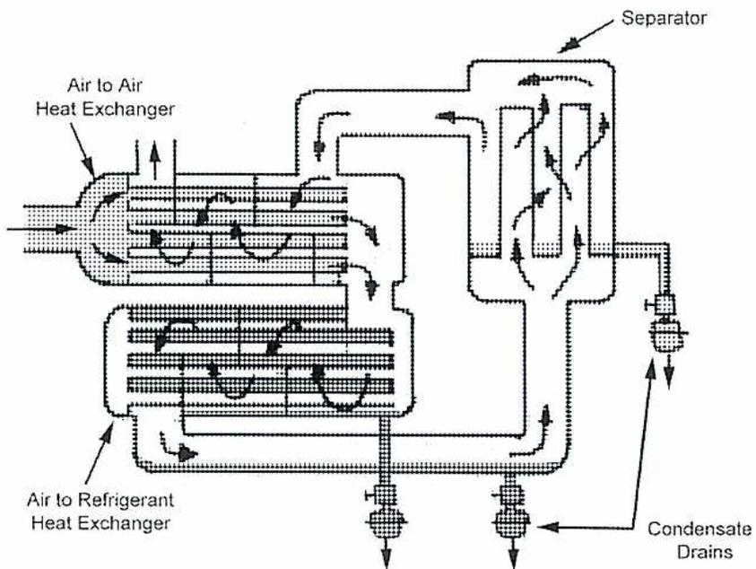
The diagram illustrates the internal layout of a refrigerant drier. On the left, there are two heat exchanger units. The upper unit is labeled 'Air to Air Heat Exchanger' and the lower unit is labeled 'Air to Refrigerant Heat Exchanger'. Both units contain coiled tubing. To the right of these units is a 'Separator' tank. Arrows indicate the flow of air and refrigerant through the system. At the bottom of each heat exchanger, there is a 'Condensate Drain' leading to an outlet.
Figure 25
Layout of a Refrigerant Drier
(Courtesy of Gardner Denver)
Objective 6
Describe the installation of a compressed air system showing all ancillary equipment including typical instrumentation.
ANCILLARY EQUIPMENT
In addition to the air compressor, coolers and driers, a compressed air system usually has a receiver and associated air filters. An example of a complete compressed air system using a reciprocating compressor is shown in Fig. 26. Compressed air flows from the compressor to the air dryer package to the air receiver. Air from the air receiver is filtered before use. The control panel in this installation controls the air dryer and the compressor.
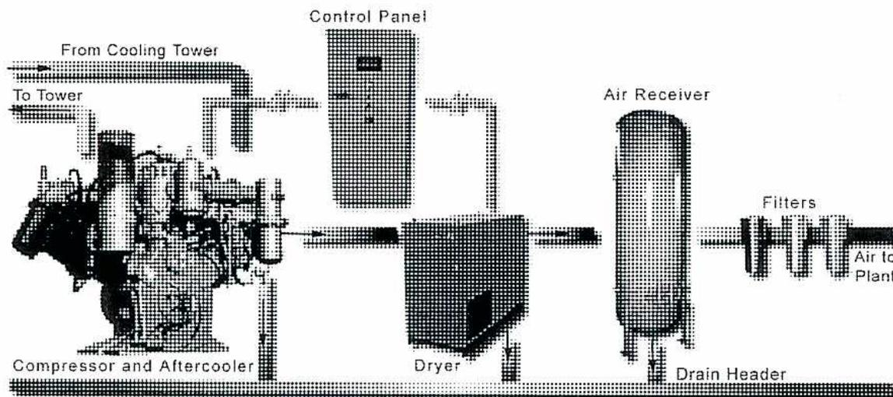
The diagram illustrates a single-stage compressor installation. On the left, a 'Compressor and Aftercooler' unit is shown. It has two pipes connected to a 'Cooling Tower': one labeled 'From Cooling Tower' and the other 'To Tower'. A 'Control Panel' is positioned above the compressor. The compressed air flows from the compressor to a 'Dryer' unit. From the dryer, the air flows to an 'Air Receiver' tank. A 'Drain Header' is connected to the bottom of the air receiver. From the air receiver, the air flows through a series of 'Filters' and then is labeled 'Air to Plant'.
Figure 26
Single-Stage Compressor Installation
Fig. 27 illustrates a two stage compressor and air receiver installation inside a building. This is not a packaged type of unit, with intercooler and aftercooler mounted separately. The air intake is from outside the building and the air is piped to the low pressure cylinder. The flow proceeds to the intercooler and the high pressure cylinder. The compressed air is then routed to the aftercooler and the air receiver. Drains are provided on the coolers and the air receiver.
![Figure 27: Typical Two-Stage Compressor Installation. This is a schematic diagram showing the components of a two-stage compressor system. On the right, an 'Air Filter' is located 'Several Feet from Ground and Hooded to Prevent Entrance of Rain'. An 'Intake Pipe as Short and Direct as Possible' leads from the filter to a 'Low Pressure Cylinder'. From this cylinder, the air passes through an 'Intercooler' and then into a 'High Pressure Cylinder'. A 'By-Pass' line is shown between the two cylinders. The output of the high-pressure cylinder goes through an 'Aftercooler' to a 'Receiver'. Various components are monitored with 'Gage' and 'Thermometer' units. A 'Safety Valve' is located on the receiver, and another 'Safety Valve Between Shut-Off Valve and High Pressure Cylinder' is indicated at the bottom left.](d4af765160d04ecef538e5066006dc77_img.jpg)
Figure 27
Typical Two-Stage Compressor Installation
A more compact system that uses a screw compressor is illustrated in Fig. 28. It is skid mounted and can be moved in one unit. It includes the compressor, intercooler and aftercooler mounted on a skid or base.
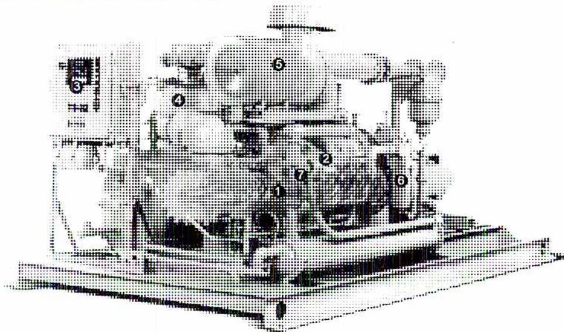
-
1 – Two-stage screw compressor 4 – Multi-stage air fluid separation 2 – Spiral valve capacity control 5 – Heavy-duty air filter 3 – Microprocessor control system 6 – Fibreglass fluid filter 7 – Interstage cooling
Figure 28
Tandem Screw Compressor
(Courtesy of Sullair)
AIR RECEIVER
An air receiver is essential for most air compressor installations. It provides a reserve capacity and also serves to dampen out pressure pulsations. These two features create a steady air flow, gradual pressure change, and a smooth regulation of compressor output.
The size of the receiver merits attention. If too small, pressure waves are stronger and cause an increase of power consumption. A large receiver may not reduce or negate pressure pulsations if the discharge pipe is too small or if its path contains too many bends. If the receiver is improperly sized and tuned to resonance frequency, it may actually induce additional pressure pulsations.
The air receiver is placed as near the compressor as possible to keep the discharge line short. A shut off valve should never be placed in this line unless a safety valve is installed between the valve and the compressor. If the compressor is run with the shut-off valve closed, the safety valve protects the compressor and discharge piping.
A similar safeguard must be provided in cases where the compressor discharge is connected direct to a large air main which other compressors also serve. A safety valve must be fitted between the compressor and the first shut-off valve in the main. This safeguards the compressor in case it is started before the shut-off valve is opened.
All types of air receivers, whether large or small, are provided with a drain valve and usually a trap to drain condensed moisture and entrained oil carried over from the aftercooler. The trap drains liquids away automatically and the drain valve is used as experience dictates, depending on the ambient relative humidity.
Air receivers have a pressure gauge, indicating the air pressure in the receiver. A safety valve also protects the receiver. The safety valve can be tested periodically by raising the pressure within the receiver or using mechanical means tests.
SUCTION FILTERS
Atmospheric air is never clean, although to the naked eye it might appear to be so. Suspended foreign matter is always present. Very fine particles of dust, sand and grit are always entrained in the atmosphere. The density of the contamination and the degree to which each impurity is present varying according to the location of the atmosphere considered.
Concentrations of suspended solids in atmospheric air in industrial areas have been measured and found to range from 100 mg to 1 100 mg per 100 m 3 of air. A compressor of 100 m 3 per minute free-air capacity running continuously could draw in 1.63 kg of dust every 24 hours, or about 3.25 kg per 48 hour week.
These solids contain many abrasive particles and, therefore, if allowed to enter the compressor cylinder, combine with the lubricating oil to form a grinding paste which promotes piston ring, cylinder and valve wear. Similar wear also occurs in other types of
compressors, such as centrifugal and lobe types. In extreme cases air borne particles may also be a factor in compressor fires and explosions.
For these reasons, it is good practice to use an effective suction air filter to protect every compressor against the entry of solid airborne contaminants.
SEPARATORS
For lubricated compressors, an air/oil separator is installed after the compressor to remove the lubricant injected into the compressor. In Fig. 28, the separator is identified as number 4. A filter (number 6 in Fig. 28) ensures the cleanliness of the fluid before it is returned to the compressor. When the air is used for instrument air, it is necessary that the air be oil free. Oil plugs up the small orifices, in pneumatic controls and control valves.
Objective 7
Describe the regulation and control of compressors.
AIR COMPRESSOR REGULATION
The demand for compressed air in most industrial operations varies. The compressor is provided with a means, either automatic or manual, to regulate the compressor output to match the volume required. If more air than needed is compressed, the pressure in the receiver rises and is expended to no useful purpose. If less air than needed is compressed, the receiver pressure falls until finally the delivery of air falls below a working minimum. Some form of control therefore is necessary to regulate the compressor output and maintain the receiver air pressure within specified operating limits.
There are four types of regulation:
- 1. Start-stop control
- 2. Variable speed control
- 3. Constant speed control
- 4. Dual control
Start-stop Control
A start-stop system is employed only in conjunction with small electrically driven compressing units. As the name implies, the compressor starts up at a predetermined minimum receiver pressure, operates at a constant speed and then stops at a predetermined maximum receiver pressure.
The determination of these maximum and minimum receiver pressures and, consequently, the gap between them play an important part in the economy of start-stop types of control. Maximum economy is achieved when the demand for compressed air is at intermittent and where the least difference between maximum and minimum pressures in the receiver can be set at about 70 kPa. The compressor operating costs are proportional to the ratio of standing time to operating time. This ratio is dependent upon the rate at which the air pressure drops in the receiver.
The capacity of the receiver governs the rate of receiver pressure drop. Because the supply of air comes from the receiver while the compressor is idle, it is good practice, when using start-stop control, to install a larger air receiver than is used with other types of control.
Two conditions can make start-stop control uneconomical. These are an almost continuous demand for air and too small a receiver. Both these factors cause a very rapid pressure drop, so the compressor continually starts up again very soon after stopping. This negates all savings on power consumption because the starting load current of an electric motor is in excess of its normal full load consumption.
Variable-Speed Control
Variable-speed control systems are used with steam driven compressors and some internal combustion driven units. Electric drivers can also be variable speed when controlled through a VFD (variable frequency drive) electrical supply. The pressure of the air within the air receiver is the set point for the variable speed control. To keep this pressure as constant as possible, it is necessary to supply a large volume of air when the demand is large and to decrease the amount of air supplied when the demand decreases.
A pressure controller regulates the speed of the compressor driver which regulates the speed of the compressor, and consequently its output. When the pressure in the receiver falls, the controller speeds up the compressor. When the pressure in the receiver reaches a predetermined point, the controller slows down the driving unit.
When the demand for air ceases altogether for a period, as commonly occurs in the use of compressed-air tools (the demand is more constant for instrument air), it is sometimes necessary to provide a means to allow the compressor to operate continuously without supplying air to the receiver. The compressor is unloaded in this situation.
Constant Speed Control
Compressors running at constant speed require an unloading device permitting the driver to run at full speed without delivering more than required flow. If the pressure in the receiver builds up, due to the compressor supplying air when little is being used, the compressor must be unloaded. There are different methods of unloading a compressor depending upon the type of compressor.
When a reciprocating compressor is completely unloaded, no air is delivered to the receiver, practically no work is done and, only sufficient power to overcome the friction of the machine is consumed.
Some methods of unloading a reciprocating compressor are:
- 1. A suction-line unloading valve
- 2. Suction and discharge unloaders
- 3. Inlet valve kept closed
- 4. Adjustable compression stroke
- 5. Variable clearance volume
These methods accomplish the same objective in different ways. A suction unloading valve , Fig. 29, inserted in the suction pipe shuts off the air to the inlet when the pressure in the receiver rises above a predetermined point. The pressure in the receiver acts on one
side of a piston. The other side of the piston has the force of a spring trying to open the valve and piston. As the pressure in the receiver rises the force pushing on the piston and closing the valve increases.
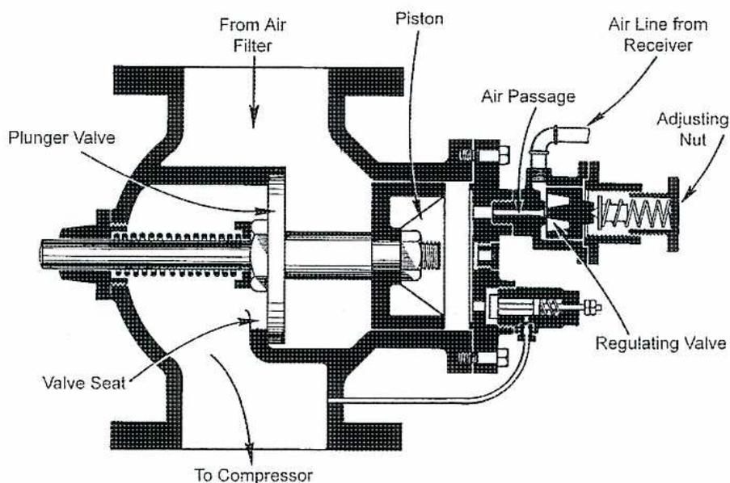
A detailed cross-sectional diagram of a suction-unloading valve. On the left, an inlet labeled 'From Air Filter' leads into a chamber. A 'Plunger Valve' is shown in this chamber, with a 'Valve Seat' below it. An arrow points from the bottom of the chamber to 'To Compressor'. In the center, a 'Piston' is connected to a rod. To the right of the piston, an 'Air Passage' connects to an 'Air Line from Receiver'. This line leads to a 'Regulating Valve' which is adjusted by an 'Adjusting Nut'. A spring is shown behind the regulating valve assembly.
Figure 29
Cross-Sectional View of a Suction-Unloading Valve
When the pressure in the receiver becomes high the piston moves enough to open a small port that admits air to the plunger valve. The plunger valve is forced against its seat. It (the plunger valve) is the suction valve for the compressor and prevents air flow to the compressor until the pressure in the receiver drops below the pressure set to reopen the valve.
The compressor, being unable to draw in any air, does no work and hence delivers no air to the next stage or to the receiver.
Screw compressors use a different unloading method. As shown in Fig. 30, a spiral, rotating valve shaped like a screw successively uncovers openings that allow the air to be recirculated to the suction without compressing it. This reduces the compression ratio and capacity. A rack and pinion gear operates the unloading mechanism.
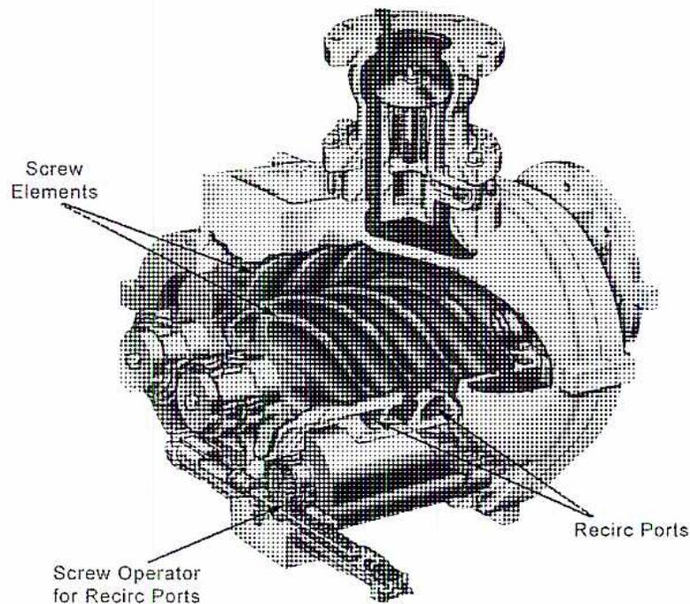
Figure 30
Capacity Control for a Screw Compressor
(Courtesy of Gardner Denver)
Dual Control
There are some operations which can be regarded as borderline in their demands for compressed air in that neither the start-stop nor the type of control entirely furnishes the most economical operating conditions. Under these circumstances, controls have been evolved which are a combination of the two. The compressor can be operated on either type of control by setting a switch accordingly.
In addition to capacity control, all compressors driven by prime movers are provided with means of unloading during stopping and starting periods. This permits the drive to be started easily and brought up to its operating speed under minimum load. It also allows freewheeling to a smooth stop with the compressor unloaded and ready for the next start.
The methods used to unload compressor cylinders for starting and stopping are similar to those adopted for regulation. The unloading devices are actuated electrically, by centrifugal force or by oil pressure generated by the compressor lubricating oil pump.
Objective 8
Describe the monitoring and protection devices for a compressed air system.
MONITORING AND CONTROL
A variety of monitoring and control systems are found on compressed air systems. The type of system used depends on the type of compressor used, the size of the system and its age. These systems have three basic functions:
- 1. Control
- 2. Protection
- 3. Monitoring
Basic systems have electric relays and pneumatic controls for controlling compressor valves and stopping and starting. Monitoring these units is usually done with pressure and temperature gauges. Protective switches and devices may be mechanically or pneumatically activated. Some control is automatic but operating and maintenance personnel are required to monitor the equipment frequently.
More recent systems use microprocessors for reliable and accurate control of capacity as well as enhanced monitoring and protection. Even smaller air compressors may be fitted with a simple computerized control system. The control system may be tied into a larger plant control system so that system status and monitoring information is available remotely or in a control room.
PROTECTION DEVICES
A potential danger to compressed air systems is over pressuring. Safety valves are installed on all pressure vessels, mainly air receivers, according to pressure vessel codes. Examples are shown in Figs. 17 and 18.
A spring-loaded safety valve is always installed on the delivery side of an air compressor and also between each stage on multi-stage machines. The valves are set to open at a pressure slightly above the standard maximum. They should also have sufficient capacity to prevent the pressure from rising above the safe value for the portion of the system they are installed to protect. Regular testing and servicing is included as part of the routine maintenance for the whole system.
Other safety devices are often used, especially when compressors are placed so that frequent attention is impossible. These include automatic shutdowns or alarms activated by high discharge pressures or temperatures. They include low lubricating oil pressure,
failure of cooling water supply and high main bearing temperatures (especially on large reciprocating compressors).
MONITORING
Pressure and temperature are always measured on the delivery side of an air compressor and also between stages on multistage machines. Pressure gauges or transmitters are fitted to receivers and intercoolers, and temperature indicators are installed directly in the discharge lines from the cylinders.
By reading these instruments carefully and regularly, variations from normal are detected and the conditions responsible for these abnormal readings are found and corrected.
If a computerized system is used, automatic trending may be available. Trending is especially useful in detecting long term trends, such as temperature increases in air temperatures after intercoolers. This trend would indicate a need to clean the intercooler. Some systems monitor maintenance intervals and provide indication of the need to replace filters and lubricants.
Objective 9
Explain the effects of altitude, air temperature, and humidity on air compressor performance.
EFFECT OF ALTITUDE
The pressure of the atmosphere is due to the mass of the column of air above the point of measurement. At sea level the atmospheric pressure is a maximum and at altitudes above sea level the atmospheric pressure reduces by approximately 11.33 kPa for each 1000 m of elevation.
The density of air also decreases with altitude. Consequently, the mass of air a compressor handles is reduced with altitude. In addition, the air needs to be compressed through an increased pressure range to maintain the same discharge pressure (absolute). The increased ratio of compression causes a reduced volumetric efficiency and consequently a reduced mass flow of air or free-air capacity.
The correction that is applied to a compressor rating (quoted in \( \text{m}^3 \) of free air per min) because of an altitude change is related to the barometric pressure. It is not, however, a direct proportion because of the effect upon the compressor pressure ratio. Table 1 gives correction figures which are used for this purpose. The table is used to determine the volume of free air at various altitudes which, when compressed to various pressures, is an equivalent effect to a given volume of free air at sea level.
Table 1
Altitude Correction Table
|
Altitude,
metres |
Barometric Pressures | Gage Pressure, kPa | |||||
|---|---|---|---|---|---|---|---|
|
mm of
Mercury* |
kPa | 400 | 550 | 700 | 850 | 1000 | |
| Multipliers | |||||||
| 0 | 760.0 | 101.3 | 1.000 | 1.000 | 1.000 | 1.000 | 1.000 |
| 250 | 739.8 | 98.6 | 1.032 | 1.033 | 1.034 | 1.035 | 1.036 |
| 500 | 719.6 | 95.9 | 1.064 | 1.066 | 1.068 | 1.071 | 1.072 |
| 750 | 699.3 | 93.2 | 1.097 | 1.102 | 1.105 | 1.107 | 1.109 |
| 1000 | 672.9 | 89.7 | 1.132 | 1.139 | 1.142 | 1.147 | 1.149 |
| 1250 | 658.9 | 87.8 | 1.168 | 1.178 | 1.182 | 1.187 | 1.190 |
| 1500 | 638.9 | 85.2 | 1.206 | 1.218 | 1.224 | 1.231 | 1.234 |
| 1750 | 618.5 | 82.5 | 1.245 | 1.258 | 1.267 | 1.274 | 1.278 |
| 2000 | 598.3 | 79.8 | 1.287 | 1.300 | 1.310 | 1.319 | 1.326 |
| 2250 | 578.1 | 77.1 | 1.329 | 1.346 | 1.356 | 1.366 | 1.374 |
| 2500 | 557.9 | 74.4 | 1.373 | 1.394 | 1.404 | 1.416 | 1.424 |
The effects of altitude cause an increased power input to a particular compressor per unit mass of air delivered. An increase in air temperature accompanies the increased ratio of compression. This causes higher discharge temperatures and increases cooling requirements.
THE EFFECT OF MOISTURE
Dry air does not exist freely in the atmosphere. The atmosphere is the vehicle which transports and distributes water all over the earth. The expression dry is only relative.
Water vapour is always present in atmospheric air and always occupies exactly the same space as the air itself. It acts just like steam and exerts a pressure of its own as it would do if it occupied the space alone. The total pressure of the air is the sum of the water-vapour partial pressure and the partial pressure of the dry air.
The temperature of air determines the maximum quantity of water it can hold in suspension. Any moisture above this amount condenses out as liquid water.
Air carrying the maximum amount of water at a certain temperature is called saturated and is said to have 100 percent relative humidity. The relative humidity of partially saturated air is therefore less than 100 percent. The actual figure is the ratio of the water vapour present in the air to the amount which would be present if the air were in a saturated condition.
If saturated air is cooled, water immediately starts to condense out of it. If unsaturated air is cooled, it comes closer to the saturation temperature until eventually the saturation temperature is reached and vapour begins to condense. This temperature is called the dew point. Natural examples of this phenomenon are fog and rain which are the result of atmospheric air cooled to below the dew point.
As the temperature of air is increased, its ability to hold water vapour in suspension increases rapidly. A rise of \( 11^{\circ}\text{C} \) doubles this ability, a fact which has an important bearing on relative humidity.
For example, if a given volume of air at 100 percent relative humidity and \( 27^{\circ}\text{C} \) is heated through \( 11^{\circ}\text{C} \) to \( 38^{\circ}\text{C} \) , its relative humidity is decreased to 50 percent. The converse is also true. As air approaches the saturation point, a relatively small drop in temperature causes moisture to condense out
When air is compressed isothermally (at a constant temperature), part of its water content condenses. This is due to the fact that the pressure of both the air and the water vapour are increased and, if the compression is continued to a sufficient degree, the water vapour condenses into water.
If a volume of air at 50 percent relative humidity is compressed at a constant temperature its relative humidity rises until the relative humidity has a value of 100 percent. This
occurs at the point where the volume has been halved and the pressure doubled. Further compression causes the precipitation of moisture as water.
In practice, the temperature of the air rises considerably during compression and this increase in temperature increases the ability of the air to hold moisture in suspension. The result is that despite the increase in pressure during compression, the capacity of the air to hold water vapour is increased so much so that even if saturated air is drawn into the compressor suction, air of a comparatively low relative humidity is discharged.
However, if after compression the air is cooled to its original temperature, the result, so far as moisture is involved, is identical to isothermal compression. Water vapour is condensed out.
Cooling in an aftercooler or in distribution lines usually causes precipitation of moisture. A similar condition is obtained in an air receiver when the compressor is shut down and the temperature falls. This is a dangerous characteristic as rusting of steel air receivers may result if a film of lubricating oil does not protect the pressure vessel. Some carbon steel air receivers are protected with internal coatings of epoxy. Others are constructed with stainless steel to avoid corrosion.
When doing work air expands, its temperature falls, and its capacity for carrying moisture decreases. The initial humidity of the air may be such that condensation occurs as the temperature falls. The air does work in power tools, pistons, or control valve actuators. If the ambient temperature is very low, water may form and freeze in the air piping. In plants using air operated control valves this is not acceptable and the instrument air is dried before use in the plant. The dew point for instrument air in most North American plants is \( -40^{\circ}\text{C} \) or better.
Objective 10
Describe the monitoring, troubleshooting, and typical preventive maintenance for a compressed air system.
PREVENTIVE MAINTENANCE
Ensuring the successful operation of a compressed air system is dependent on a combination of proactive monitoring and effective preventive tasks. This objective provides an overview of the types of tasks that are carried out but it is not intended to be the sole basis for a maintenance program. A maintenance program is developed for each situation using recommendations from equipment vendors, experience and consideration of local operating and environmental factors.
AIR FILTERS
The beginning of a compressed air system is the air filter that ensures clean air is provided to the compressor. The cleanliness of the air has a marked effect on the operation of a compressor and also on the extent to which its moving parts need to be repaired or replaced.
Impurities in the intake air are removed before the air enters the cylinder of the compressor. Air filters effect this removal. The air is drawn from as clean and cool a source as possible and from outside the engine room. A coarse screen is usually installed on the inlet to the air duct to remove larger objects and birds. The screen has to be kept free of frost buildup in the winter.
Local conditions, the type and capacity of the filter, the volume of air handled and the amount of dust in the atmosphere influence the interval between cleaning of air filters. A clean filter imposes very little restriction upon the flow of air passing through it, and contaminants are never allowed to accumulate to an extent which seriously impedes the air flow. The manufacturer of the particular filter in use is consulted to determine when a filter needs cleaning and also the best method of cleaning. A differential pressure gauge is often used to indicate the pressure drop across the filter media.
COMPRESSORS
Monitoring and maintaining compressors is similar to other stationary equipment, such as pumps and turbines. The compressor is closely monitored on a day to day basis for changes in operating conditions. The machine is inspected for leaks and for overall cleanliness. The sounds and vibrations of the machine should change little over time. Any large changes are a signal of mechanical changes in the machine.
A preventative maintenance (PM) program is setup using the equipment manufacturer's guidelines. The types of items in a PM programme include:
- • Changing the compressor oil
- • Changing the inlet air filters
- • Cleaning the intercooler and aftercoolers heat transfer surfaces
- • Fixing any oil and water leaks that may develop.
These tasks may be done after a set number of hours of operation, or after a specific time period, such as every 3 months.
Reciprocating Air Compressors
The working temperature within the cylinder of the compressor is one of the most important operating conditions to monitor on reciprocating air compressors.
Temperatures do not become high until near the point of maximum compression is reached. At this point, toward the end of the stroke, the temperature under standard conditions is about 90°C although in exceptional circumstances the temperature may be as high as 225°C.
Care of the compressor cooling system is necessary to ensure that the temperature of compression is not sufficiently high to decompose or carbonize the lubricating oil present on the internal surface of the cylinder. Oil subjected to the effects of excessive heat in the presence of compressed air is susceptible to oxidation. The cooling water is maintained at a rate of flow and temperature preventing the air discharge temperature rising above 150°C. When in operation, frequent temperature readings of the water are taken at both the inlet and the outlet.
Scale in the water jackets, intercooler pipes and other water-cooled parts, may accumulate if untreated water that contains impurities or deposit-forming salts is used. Such accumulations may seriously interfere with the heat transfer from the compressed air to the circulating water. These parts are, therefore, thoroughly cleaned out as often as is necessary. The criterion is the condition of the water in use. Cooling water used in industrial plants is normally chemically treated and controlled in the desired ph range to prevent scaling and corrosion of the heat transfer surfaces.
High discharge temperatures are often the result of failure of one or more of the discharge valves. The flow of hot air to and fro through the leaking discharge valve causes the valve to become quite hot. A high discharge temperature is an indication of valve failure. If one valve fails, all the valves should be inspected when the repairs are made.
Poor piston seal has a similar effect to leaking discharge valves. The piston and the cylinder become hot and produce an increased discharge temperature.
The explosion of an oil vapour-air mixture in the high-pressure cylinders or air receivers of air compressors has caused accidents. The main cause of such accidents is the formation of carbon from the excessive use of lubricating oil combined with contaminated air. The carbon formed in the high-temperature discharge areas, particularly
on discharge valves, if allowed to remain can become progressively hotter and finally incandescent. Close watch should be kept for such carbon buildup.
Screw Compressors
Screw compressors require less maintenance than reciprocating compressors. There are only a few moving parts – the screw elements. In oil free screw compressors the elements do not make contact and there is little wear. With lubricated screw compressors regular oil and filter changes are required. Manufacturers will recommend an interval but it is modified, if air cleanliness cannot be maintained because of air contamination.
Screw compressors need to be monitored for physical conditions, such as oil and cooling water leaks. Compressor loading and unloading patterns are also watched closely. Air temperatures are monitored closely. The coolers can also be checked for leaks periodically. Coolers that leak cooling water into the air, when the compressor is unloaded, can cause problems with the air driers.
Discharge air flow from the screw compressor is also a valuable indication to monitor. A higher than normal flow indicates higher air usage in the plant. If the compressor cannot maintain its desired air flow, the screw assembly may have to be replaced. The assembly is usually replaced on a five year basis or as specified by the manufacturer of the compressor.
COOLERS
Inefficient cooling, from either the intercooler or the aftercooler, is a primary cause of high discharge temperature. Coolers need to be cleaned, both internally and externally depending on the rate of contamination. When the aftercooler temperature is as low as possible, the load on the air driers is the lowest. This is because moisture is condensed out of the air stream as it is cooled. The more cooling, the more water is removed from the air stream at the coolers.
DRIERS
Dry air is essential for the operation of instrumentation in the plant or facility. This is especially true for low ambient conditions. An instrument air dew point of at least \( -40^{\circ}\text{C} \) is necessary at all times. Therefore the operation of the air driers must be monitored closely. Many plants have an online dew point analyser installed downstream of the air driers. The analyser alerts the operators as soon as the dew point begins to fall. Often a lab test or field test is also done each shift to check the dew point. Things to check when the driers are not functioning properly are:
- • The driers timers or sequence. Are the driers going through the cycle properly?
- • Purge air flow. Is the purge air flow set at the desired value?
- • Are the drier prefilter and afterfilters clean or do they have desiccant plugging them.
- • Temperatures during regeneration. The driers must reach the desired temperature during regeneration.
- • Total air flow. The driers may be overloaded.
- • The inlet dewpoint can be checked in case upstream coolers are leaking.
PROTECTIVE DEVICES
The correct functioning of all protective devices needs to be verified on a regular basis. Backup air supplies should also be checked regularly. Standby compressors are often 100% duty machines the same as the duty machine. Other plants use compressed air from a process air compressor as backup. Some of the protective devices on a typical screw type instrument air compressor are:
- • Air pressure switches (interstage and discharge)
- • Low oil pressure switch
- • Low lub oil level
- • Low inlet pressure (indicates inlet filter plugged)
- • High air temperatures (intercooler and discharge)
Chapter Questions
B3.7
- 1. What are the two main types of compressors? Describe how they work and provide a further breakdown of each type of compressor.
- 2. Describe three possible configurations for multi-stage compressor cylinders in reciprocating compressors.
- 3. Into what four types can rotary compressors be divided? Provide a brief description for each one.
- 4. Using a simple sketch, explain the operating principle of a centrifugal compressor wheel. Show the gas flow entering and exiting the wheel.
- 5. Describe the principle and operation of a desiccant drier. What are the two ways in which moisture can be removed?
- 6. Explain the functions of receivers, air filters and separators.
- 7. List 4 methods of unloading a reciprocating compressor.
- 8. State the three basic functions of a compressor control system and give some examples.
- 9. Explain the effect of altitude on air compressors.
- 10. Describe three possible causes for high discharge temperature on a reciprocating compressor.